MiRNA Compilation¶
This module generates a comprehensive collection of miRNA candidates by aggregating already annotated miRNAs from four plant miRNA databases (i.e., miRBase, PmiREN, sRNAanno, and PsRNA) and predicted miRNAs from user-submitted sRNA-Seq data. Four functions are implemented, including miRNARetrival, miRNAPredict, genomeRetrival, and miRNATranslate. The details are as follows:
| Tool | Input | Output | Applications |
|---|---|---|---|
miRNARetrival |
Name of species and miRNA databases | Already annotated miRNAs | Aggregate annotated miRNAs provided by different miRNA databases |
miRNAPredict |
SRA accession numbers or uploaded fastq file | Predicted miRNAs | Predict miRNAs from sRNA-Seq data |
genomeRetrival |
Name of species or genome sequences and annotation | Path of formatted genome sequences and annotation | Get genome sequences and annotation |
miRNATranslate |
Output from miRNARetrival and miRNAPredict | miRNA and miRNA precursors with a uniform format | Translate annotated and predicted miRNAs into the genomic coordinate system |
In the following, we will use screenshots to show how to use this module correctly.
miRNARetrival¶
This function was designed to retrieve miRNA annotations (e.g., names, sequences, genomic coordinates, and so on) automatically from four miRNA databases (miRBase, PmiREN, sRNAanno, and PsRNA).
Input¶
- Select a species (e.g., Arabidopsis thaliana)
- sRNA databases (e.g., miRBase, PmiREN, sRNAanno, and PsRNA (PlantsmallRNAgenes))
Output¶
- An interactive HTML document (Overview of already annotated miRNAs in public databases)
- A packaged file containing miRNA information corresponding to the table in the above HTML document (Collection of {species} miRNAs from public databases)
How to use this function¶
Select species and databases, then click Execute button to run this function (see following figure).
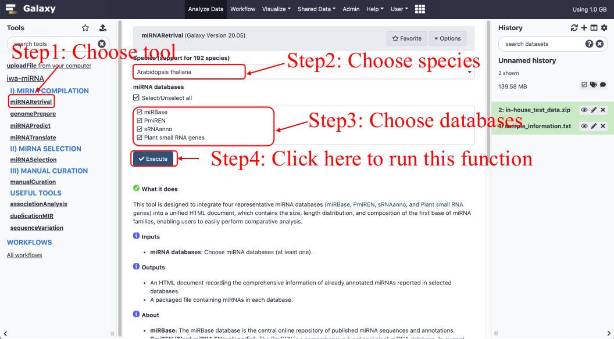
An interactive HTML document will be returned to users, the example output for this function is available at here, the following figure shows a screenshot.
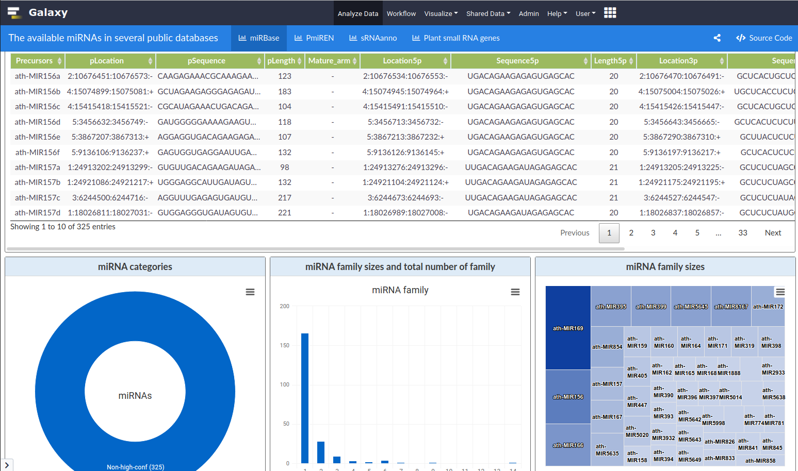
- Detailed information of miRNAs: Precursors represents miRNA names; pLocation and pLength represent the location, length of miRNA precursors, respectively; Mature_arm represents the reported mature arm in database; Location5p, Sequence5p, Length5p represent the location, sequence, length of 5p-arm miRNAs, respectively; Location3p, Sequence3p, Length3p represent the location, sequence, length of 3p-arm miRNA, respectively. Conf represents whether miRNA is marked as “high confidence” in miRBase.
- miRNA categories: miRNA categories classified according to the Conf column, precursors name, precursors type, and Source in miRBase, PmiREN, sRNAanno, and PsRNA, respectively.
- miRNA family size and total number of families: Summary of miRNA families according to the Precursors column.
- miRNA family size: TreeMap of miRNA families according to the Precursors column.
- Length distribution: Length distribution of miRNA precursors according to the pLength column.
- Length and distribution of all miRNAs: Summary of miRNA length according to the Length5p and Length3p column.
- Length and distribution of mature miRNAs (only in PmiREN and sRNAanno): Summary of length of mature miRNA according to the Mature_arm, Length5p, and Length3p column.
- Composition of the first base: Summary of first base according to the Sequence5p and Sequence3p column.
genomePrepare¶
This function was designed to fetch genome sequences in FASTA format and corresponding annotations in GFF3/GTF format automatically, and then building index for the genome sequences. To run this function, users can choose Download from EnsemblPlants database or Upload from local disk:
How to use this function¶
For species included in EnsemblPlants database, users choose Download from EnsemblPlants database, and genome sequences and corresponding annotation files will be automatically downloaded from Ensembl Plants with user-specific version. We take *Arabidopsis thaliana* as an example to show how to use this function (see following figure):
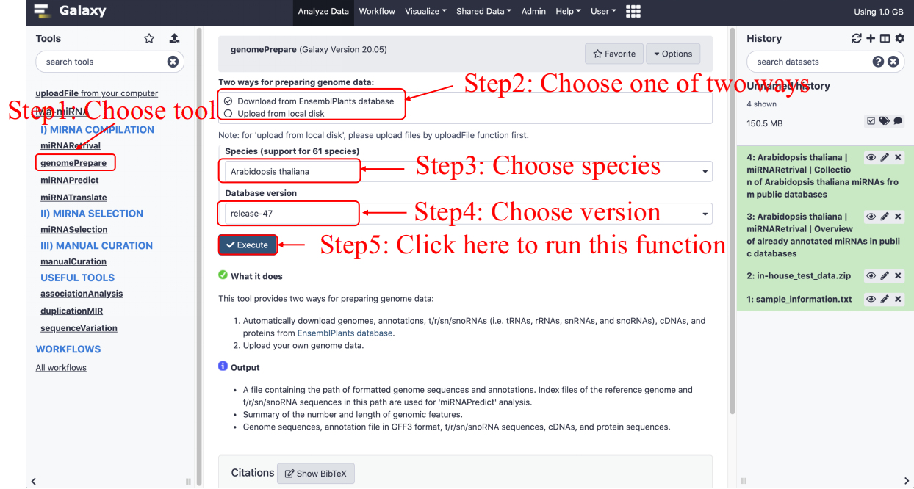For species not included in EnsemblPlants, users are required to input the Latin species name and upload required data from local disk (see following figure).
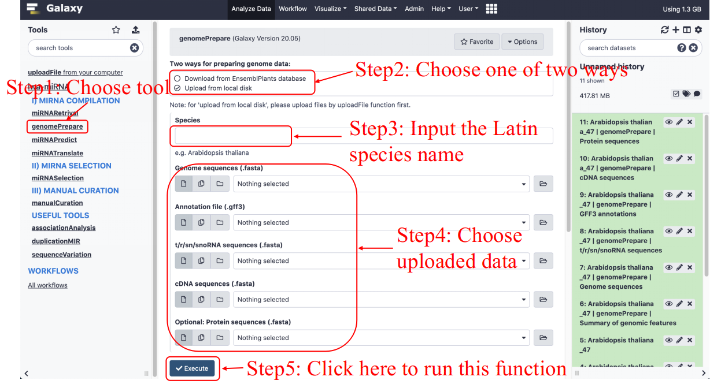
miRNAPredict¶
This function predicts miRNAs from raw small RNA sequencing data, which includes download and filter raw sRNA sequencing data automatically from NCBI SRA (Short Read Archive) database and/or private datasets.
Input¶
- References of species: Path of genome file.
- SRA accessions or compressed raw fastq files.
- (Optional) Adapter sequences for each library. The adapter file as a fasta format:
- (Optional parameters) The parameters of quality control, such as quality score, minimum length, maximum length, and minimum read number.
- (Optional parameters) The parameters of miRNA identification, such as miRNAs length, multi-mapping, total abundance, maximum abundance, and sample support.
Output¶
- MultiQC results of fastq file: An HTML report providing quality control about public small RNA-Seq data or private sequencing data.
- HTML report of raw sequencing data preprocessing: An HTML report providing read number, adaptors, and barcode information in each library.
- Read abundance data: A packaged file containing the sequences and abundance (Transcripts per million; TPM).
- The miRNA candidates from sRNA-Seq data: An annotation file containing the information of miRNA precursors and mature miRNAs.
Workflow diagram¶
How to use this function¶
Users are required to input the SRA accession number or upload compressed raw sequencing data (fq.gz) in ZIP format (see following figure). The example data used in this tutorial are listed in sRNA-Seq_test_data.zip. If you are not clear about how to upload local data to iwa-miRNA server, please see Upload data to your local iwa-miRNA server for details.
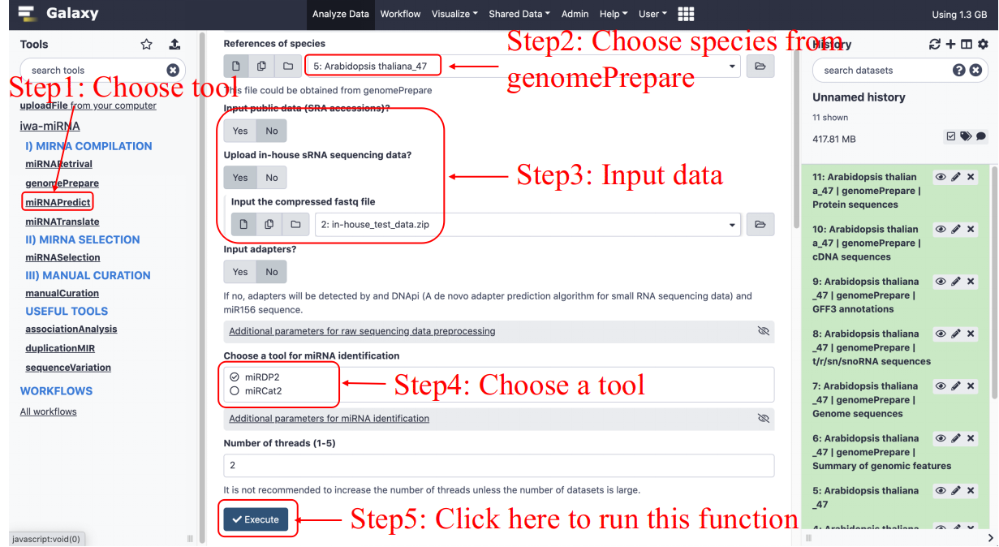Note: iwa-miRNA can automatically search for adapter sequences, but for large-scale data processing, we recommend that users provide adapter sequences to prevent erroneous results.
- HTML documents and prediction results will be returned:
I) Quality control report generated by multiQC
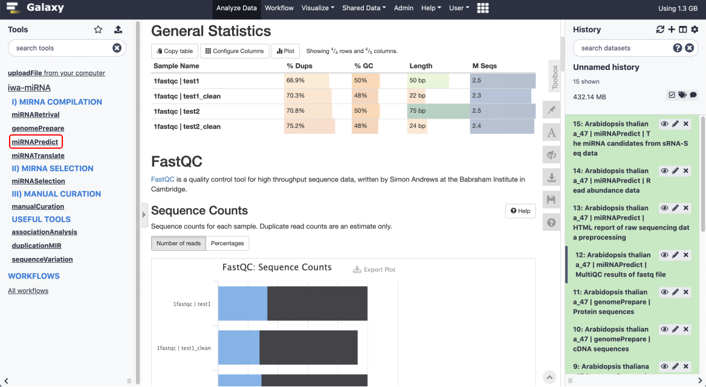II) An HTML document recording a summary table and line chart of the number of reads in data processing will be returned (see the figure below). We also provided a complete preview of the results (Output in miRNAPredict).
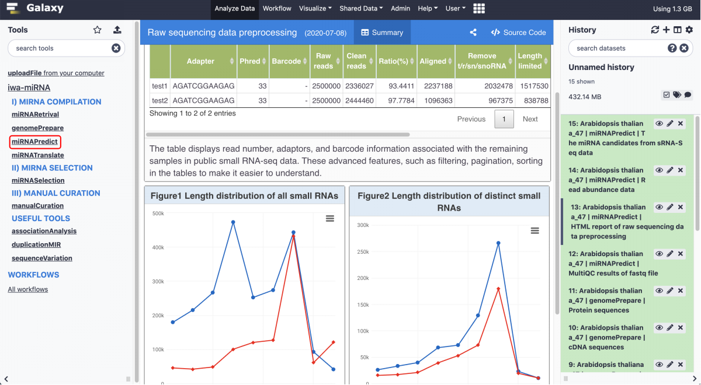Note: Summary table displays read number, adaptors, and barcode information for each library. The meaning of each column in the table is as follows:
- Adapter: The adapter sequence;
- Phred: Phred score;
- Barcode: Whether there is a barcode in each library, “-” means no;
- Raw reads: Number of reads generated by sequencing;
- Clean reads: Number of reads that are filtered by adapters and quality scores;
- Ratio: Clean reads/Raw reads;
- Length-limited: Number of reads satisfying the length criteria (Default: 18-26 nucleotide);
- Aligned: Number of reads between 18 and 26 nt in length and at most one mismatch during mapping (-v 1 –best –strata);
- Remove t/r/sn/snoRNA: Number of mapped reads after removing reads corresponding to tRNAs, rRNAs, snRNAs and snoRNAs;
- Collapsed reads: Number of unique reads after reads collapsing;
- Most abundant read: The sequence with the highest count;
- Most abundant read count: The highest count.
III) A file containing the location, sequences, length of miRNA candidates, miRNA precursors, 5’ arm, and 3’arm (see the figure below). We also provided a complete preview of the results (Output2 in miRNAPredict).
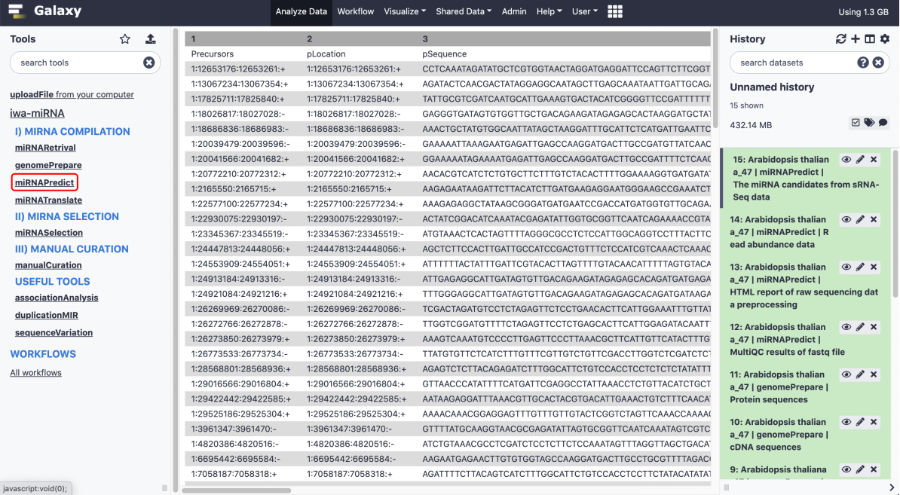Note: The meaning of each column in the file is as follows:
- Precursors: The ID of miRNA precursor, which is composed of chromosome, start site, stop site, and strand with “:”.
- pLocation, pSequence, pLength: The location, sequence, length of miRNA precursor, respectively.
- Location5p, Sequence5p, Length5p, Abundance5p: The location, sequence, length, TPM value of 5p-arm miRNAs, respectively.
- Location3p, Sequence3p, Length3p, Abundance3p: The location, sequence, length, TPM value of 3p-arm miRNA, respectively.
- Mature_arm: The possible arm of mature miRNA inferred from the sequence abundance.
miRNATranslate¶
This function translates annotated miRNAs into the genomic coordinate system of the target genome by performing miRNA precursor-to-genomic alignment using GMAP.
Input¶
- miRNA candidates from miRNARetrieval: Input Collection of {species} miRNAs from public databases from
miRNARetrival. - miRNA candidates from miRNAPredict: Input The miRNA candidates from sRNA-Seq data from
miRNAPredict. - References of species: The file containing the path of formatted genome sequences and annotations.
Output¶
- Merged miRNA candidates from already annotated and newly predicted miRNAs: A list of miRNA and miRNA precursors with a uniform format, which have 12 columns containing the location, sequence, length of miRNA precursors, 5’ arm, 3’arm, the arm of mature miRNAs, and miRNA source.
- HTML report of merged miRNA candidates: An HTML report providing the collection situation and RNA structure of miRNAs.
Workflow diagram¶
miRNAs from different databases are firstly aligned with user-specified/submitted genome sequences using GMAP, and then combined into a single table, together with predicted miRNAs from sRNA-Seq datasets. The same miRNAs were identified according to the genomic coordinates of 5p and 3p arms.
How to use this function¶
This function takes miRNA candidates from
miRNARetrivalandmiRNAPredictas inputs (see following figure)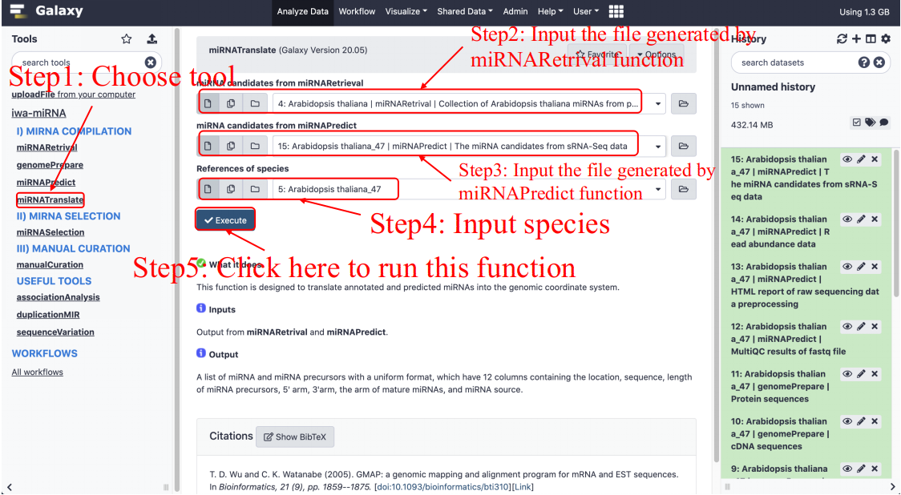I) The miRNA candidates will be returned as a TAB separated matrix with 12 columns: the location, sequence, length of miRNA precursor, 5’ arm, 3’arm, the arm of mature miRNA, and miRNA source. The complete preview of this results is available at Output in miRNATranslate.
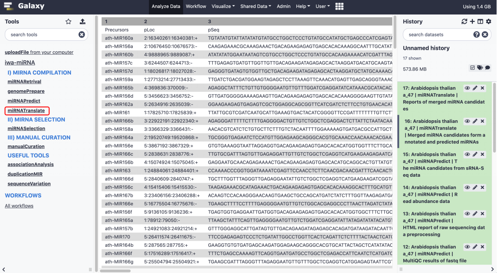Note: The meaning of each column in the file is as follows:
- Precursors: The name of miRNA precursors;
- pLoc, pSeq, pLen: The location, sequence (5’->3’), length of miRNA precusors;
- Loc5p, Seq5p, Len5p: The location, sequence (5’->3’), length of 5’-arm miRNAs;
- Loc3p, Seq3p, Len3p: The location, sequence (5’->3’), length of 3’-arm miRNAs;
- Mature_arm: The possible arm of mature miRNAs inferred from database query results (
miRNARetrieval) and the sequence abundance (miRNAPredict);- miRBase/PmiREN/sRNAanno/Psgenes: Whether miRNAs are included in these databases. A check mark means being included, cross means no;
- sRNA_Seq: Whether miRNAs are predicted in small RNA-Seq data (sRNA-Seq);
- Source: “1”, “2”, “3”, “4” represent annotated miRNAs from miRBase, PmiREN, sRNAanno and Psgenes databases, respectively. “p” denotes miRNAs predicted by
miRNAPredictfunction in iwa-miRNA.II) An HTML document recording the merged miRNAs and the RNA secondary structure plot of miRNA precursors will be returned (see the figure below). Users can make a further decision based on their knowledge through flexible operations, such as adjusting thresholds of filters, and selecting and deleting miRNA candidates. The web server provides a complete preview of the results (Output2 in miRNATranslate).
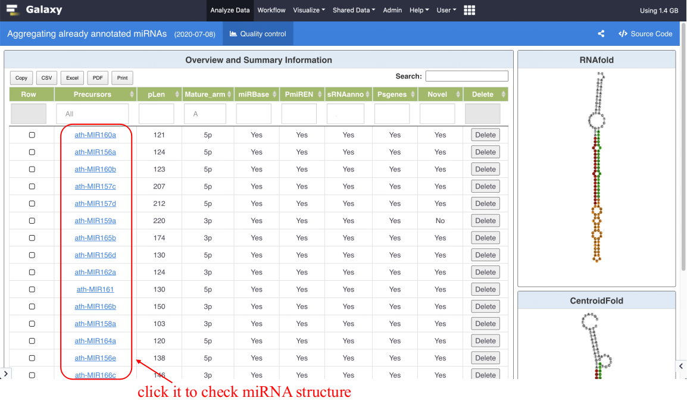Note: There are three sections in this HTML report. In Overview and Summary Information, we list the aggregated miRNAs that identified by four databases and small RNA-Seq data. By clicking on the link in the table, the RNAfold and CentroidFold sections interactively show the RNA structure of RNAfold and CentroidFold prediction.
- Precursors: The name of miRNA precursors;
- pLen: The length of miRNA precusors;
- miRBase/PmiREN/sRNAanno/Psgenes: Whether miRNAs are included in these databases. TRUE means being included, and NO means no;
- sRNA_Seq: Whether miRNAs are predicted in small RNA-Seq data (sRNA-Seq);